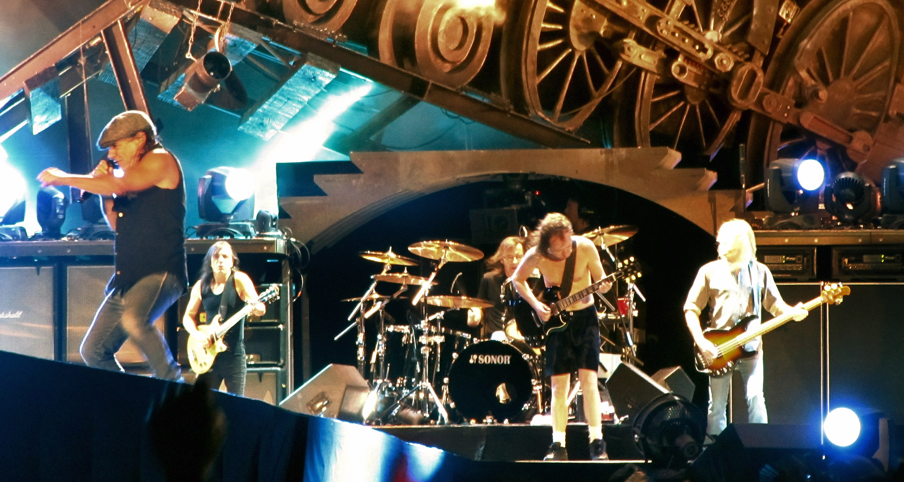
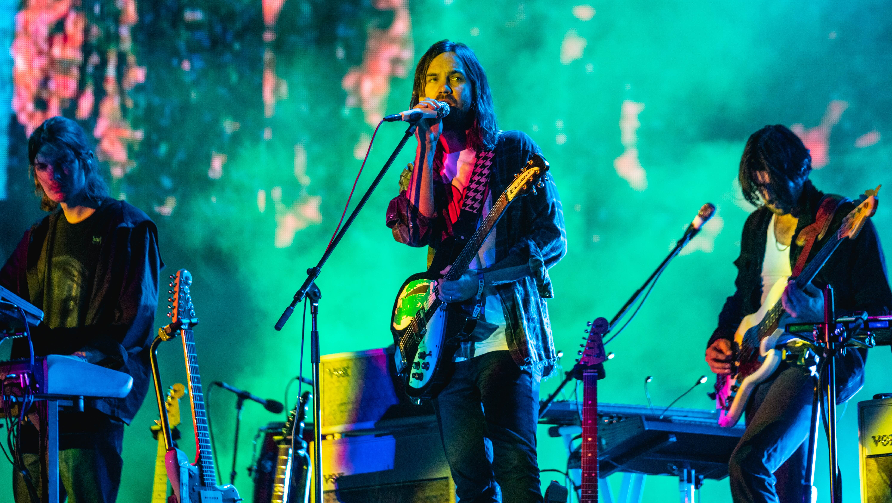
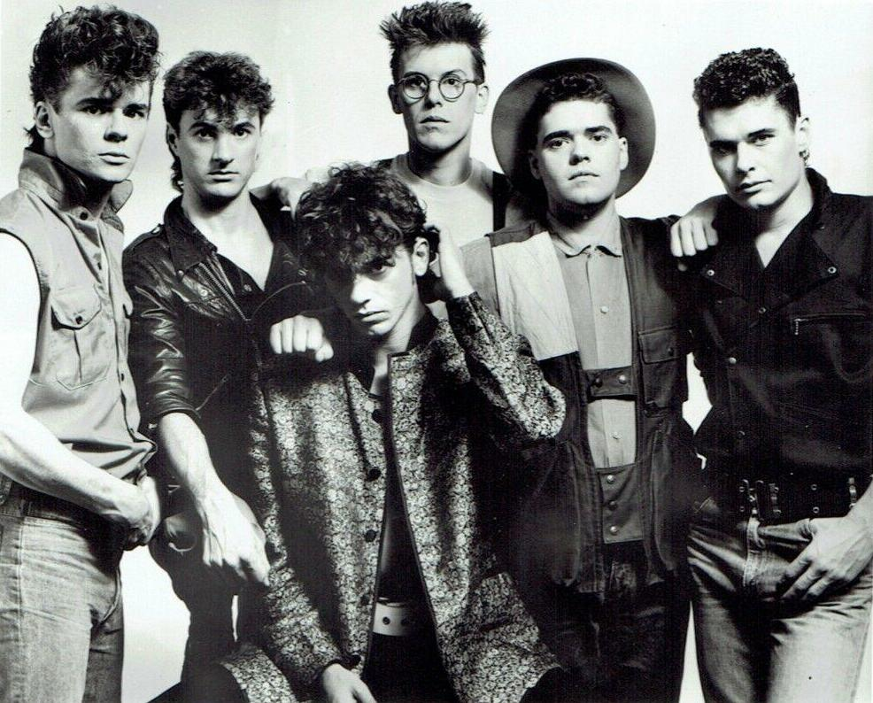
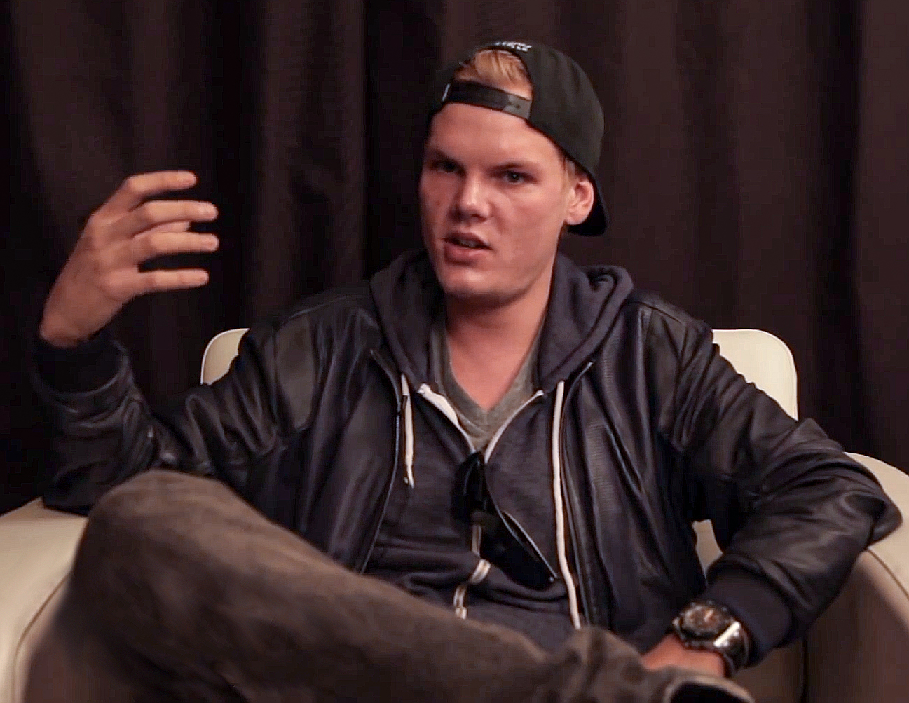
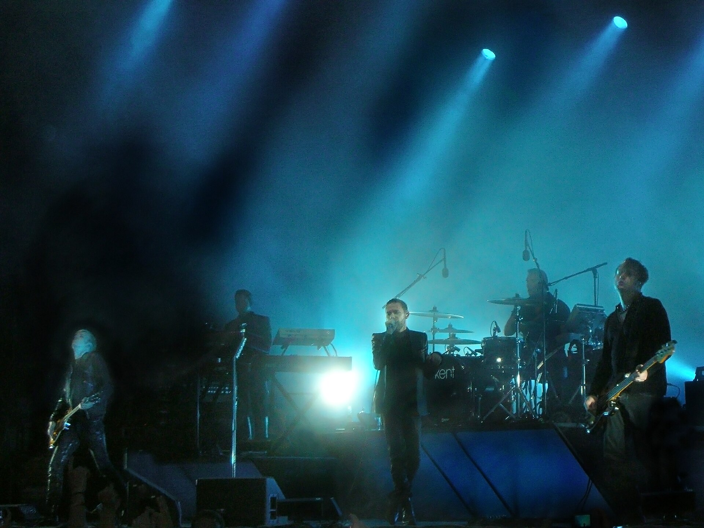
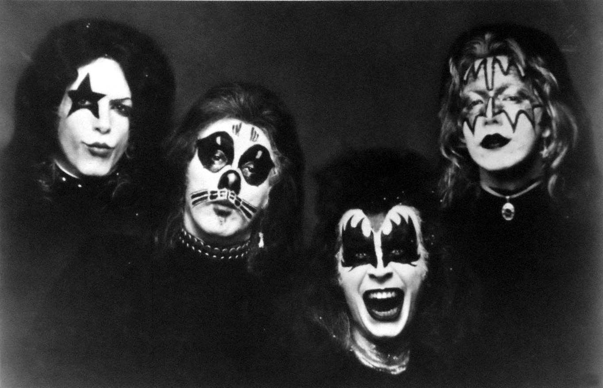
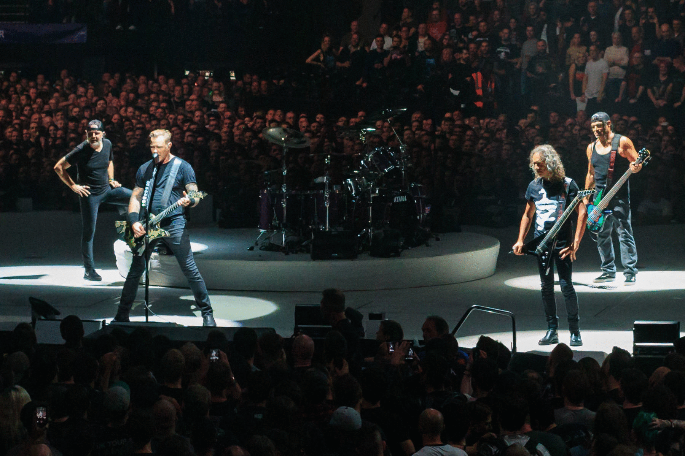
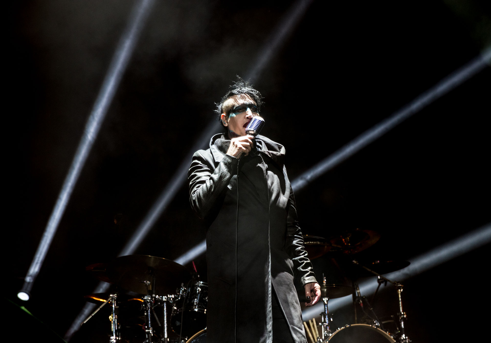
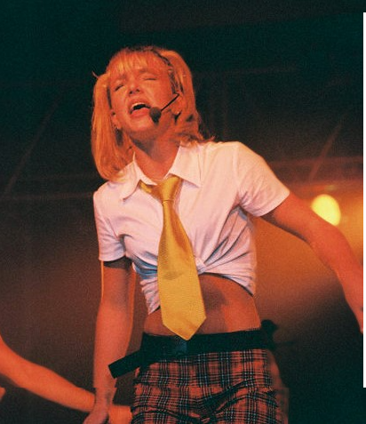

| AC/DC |
 |
Angus Young, Brian Johnson, Cliff Williams, Phil Rudd, Stevie Young |
Power Up |
Australia |
Källa |
| Tame Impala |
 |
Kevin Parker |
The Slow Rush |
Australia |
Källa |
| INXS |
 |
Garry Gary Beers, Andrew Farriss, Jon Farriss, Tim Farriss, Michael Hutchence, Kirk Pengilly. |
Original Sin |
Australia |
Källa |
| ABBA |
 |
Benny Andersson, Björn Ulvaeus, Anni-Frid Lyngstad, Agnetha Fältskog |
Voyage |
Sweden |
Källa |
| Avicii |
 |
Tim Bergling |
Tim |
Sweden |
Källa |
| Kent |
 |
Joakim Berg, Martin Sköld, Sami Sirviö, Markus Mustonen |
Då som nu för alltid |
Sweden |
Källa |
| KISS |
 |
Paul Stanley, Gene Simmons, Ace Frehley, and Peter Criss |
Monster |
USA |
Källa |
| Metallica |
 |
James Hetfield, Lars Ulrich, Kirk Hammett, Robert Trujillo |
72 Seasons |
USA |
Källa |
| Marilyn Manson |
 |
Brian Hugh Warner |
We Are Chaos |
USA |
Källa |
| Britney Spears |
 |
Britney Spears |
Glory |
USA |
Källa |